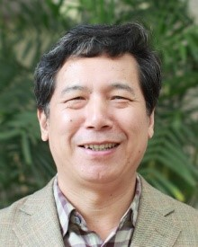

Introduction
The workshop brings together researchers, practitioners, and policy‑makers to advance the state‑of‑the‑art in applying artificial intelligence to Earth observation for sustainability challenges. Technically, this workshop explores how state-of-the-art EO data-tailored foundation models, efficient architectures, and novel learning paradigms can be leveraged or adapted to tackle pressing sustainability challenges. Topics include, but are not limited to, climate monitoring, disaster response, biodiversity, agriculture, urban development, clean energy, and social economics.
Call for Papers
The SEA Workshop offers two submission tracks: Proceedings and Non-Proceedings. All accepted papers will be showcased in the poster session, but only a selected subset from the Proceedings Track will be invited for oral presentations and considered for the Best Paper Award.- Submission deadline: June 22, 2025 (AoE)
- Proceedings Track: 4-8 page papers (excluding references) using ICCV format; Double-blind review.
- Accepted papers appear in ICCV Workshop Proceedings
- Best Paper Award will be chosen from submissions in the Proceedings Track.
- Non-Proceedings Track: allow extended abstracts or published work (up to 4-page papers) using any format; Double-blind review.
Invited Speakers


Accepted Papers
- Adhemar de Senneville, Xavier Bou, Jean-Louis Bonne, Nicolas Dumelie, Rafael Grompone von Gioi, Thibaud Ehret, Gabriele Facciolo. Towards Large Scale Geostatistical Methane Monitoring with Part-based Object Detection (oral)
- Toqi Tahamid Sarker, Mohamed Embaby, Taminul Islam, AMER ABUGHAZALEH, Khaled Ahmed. GasTwinFormer: A Hybrid Vision Transformer for Livestock Methane Emission Segmentation and Dietary Classification in Optical Gas Imaging (oral)
- Angela Tsao, David B. Lobell. PlantationBench: a multiscale, multimodal remote sensing benchmark for tree plantation mapping under distribution shift (oral)
- Takayuki Shinohara, Hidetaka Saomoto. ViT-Koop: Vision-Transformer–Koopman Operators for Efficient Time-Series Forecasting of Earth-Observation Data
- Yue Zhou, Mengcheng Lan, Xiang Li, Litong Feng, Yiping Ke, Xue Jiang, Qingyun Li, Xue Yang, Wayne Zhang. GeoGround: A Unified Large Vision-Language Model for Remote Sensing Visual Grounding
- Aditya Chakravarty. Out-of-Distribution Generalization in Climate-Aware Crop Yield Prediction with Earth Observation Data
- Nicolas Drapier, Aladine Chetouani, Aurélien Chateigner. Combining Transformers and CNNs for Efficient Object Detection in High-Resolution Satellite Imagery
- Wei Lu, Si-Bao Chen, Huidong Li, Qingling Shu, Chris Ding, Jin Tang, Bin Luo. LEGNet: A Lightweight Edge-Gaussian Network for Low-Quality Remote Sensing Image Object Detection
- Yahya Ibrahim, Márta Belényesi, Chang Liu, Mátyás Richter-Cserey, Máté Simon, Tamas Sziranyi, Csaba Benedek. Inland Excess Water (IEW) Monitoring Using Sentinel-1/2: A SplitClass Segmentation and Temporal Gap-Filling Approach
- Zhenghui Zhao, Chen Wu, Di Wang, Hongruixuan Chen, Zhuo Zheng. ChangeBridge: Spatiotemporal Image Generation with Multimodal Controls for Remote Sensing
- Philip Wootaek Shin, Vishal Gaur, Rahul Ramachandran, Manil Maskey, Jack Sampson, Vijaykrishnan Narayanan, Sujit Roy. Towards High-Resolution Alignment and Super-Resolution of Multi-Sensor Satellite Imagery
- Yuchi Ma, Yuval Sadeh, Sheila Baber, Oleksandra Oliinyk, Inbal Becker-Reshef, David B. Lobell. Transfer Learning-based winter wheat yield mapping in Ukraine
- Mark Moussa, Andre Williams, Seth Roffe, Douglas C Morton. PyroFocus: A Deep Learning Approach to Real-Time Wildfire Detection in Multispectral Remote Sensing Imagery
- Jess Tam, William K Cornwell. Simple edge-guided wildlife classification with classical detectors
- Shengjie Liu, Lu Zhang, Siqin Wang. Resolution Revolution: A Physics-Guided Deep Learning Framework for Spatiotemporal Temperature Reconstruction
- Subin Varghese, Joshua Gao, Vedhus Hoskere. ViewDelta: Scaling Scene Change Detection through Text-Conditioning
- Hongruixuan Chen, Jian Song, Olivier Dietrich, Clifford Broni-Bediako, Weihao Xuan, Junjue Wang, Xinlei Shao, WEI YiMin, Junshi Xia, Cuiling Lan, Konrad Schindler, Naoto Yokoya. BRIGHT: A globally distributed multimodal building damage assessment dataset with very-high-resolution for all-weather disaster response
- Phuc Nguyen. HA-RDet: Hybrid Anchor Rotation Detector for Oriented Object Detection
- Xiaoyan Lu, Qihao Weng. Tree Mapping with Limited Data: Fine-Tuning Foundation Models for Multimodal Fusion
- Vishal Nedungadi, Xingguo Xiong, Aike Potze, Ron van Bree, Tao Lin, Marc Rußwurm, Ioannis N. Athanasiadis. From General to Specialized: The Need for Foundational Models in Agriculture
- Abhiroop Chatterjee, Susmita Ghosh, Ashish Ghosh. Context-Aware Masking and Learnable Diffusion-Guided Patch Refinement in Transformers via Sparse Supervision for Hyperspectral Image Classification
- Om A. Desai, Siddhant Desai, Darshan A. Desai. MetaChange: A Risk-Adjusted Foundation Model for Global Afforestation & Beyond
- Songkun Yan, Zhi Li, Siyu Zhu, Yixin Wen, Mofan Zhang, Mengye Chen, Jie Cao, Yang Hong. AQUAH: Automatic Quantification and Unified Agent in Hydrology
- Zhuoning Gu, Xiao-Peng Song. A Transformer-based deep learning network for barley and wheat mapping using time-series Sentinel-2 imagery
- Jason Blake Cohen. Improving global black carbon radiative forcing using satellites, physical models, and machine learning in tandem
- Prasanth. BiodiverseNet: Multitask Learning on Fused Multispectral and Radar Data for Scalable Ecosystem Monitoring
- Jospeh Chai, Hoang D. Nguyen, Barry O' Sulllivan. IRLTrees3D: A 3D Reconstruction Dataset of Trees
- Siddharth Sachdeva, Sidharth Tadeparti, David B. Lobell. Cross-view Object Geolocalization for Tree Species Mapping
- Judah Goldfeder, Gabriel Guerra Trigo, Philippe Martin Wyder, Neil Kachappilly, Hod Lipson. Evaluating Performance of Reinforcement Learning Agents to Control Buildings Efficiently
Organizers


Yanfei Zhong
Wuhan University

Liangpei Zhang
Wuhan University


Timeline
-
Paper Submission Deadline
June 4, 2025June 22, 2025 -
Notification to Authors
June 25, 2025July 9, 2025 -
Camera‑Ready Deadline
July 11, 2025August 14, 2025 -
Workshop at ICCV
October 19, 2025